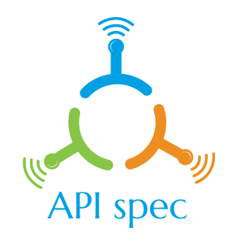

API specifications is a document (a website one day maybe) that aggregates relevant information about API design, API modelling platforms and everything related.
Table of Contents
Formats
Swagger
Representation of RESTful API.

API Blueprint
Documentation-oriented API description language

RAML
RESTful API Modeling Language.

External resources
Documents
- Comparison: RAML vs Swagger vs API Blueprint
- API spec tool comparison
- RAML - Restful API Modelling Language at Sitepoint
- API Design: Do You Swagger, Blueprint or RAML?
- Discussion: RESTful equivalent for WSDL
- REST API contract
Tools overview
To be added
Contribution
To be added